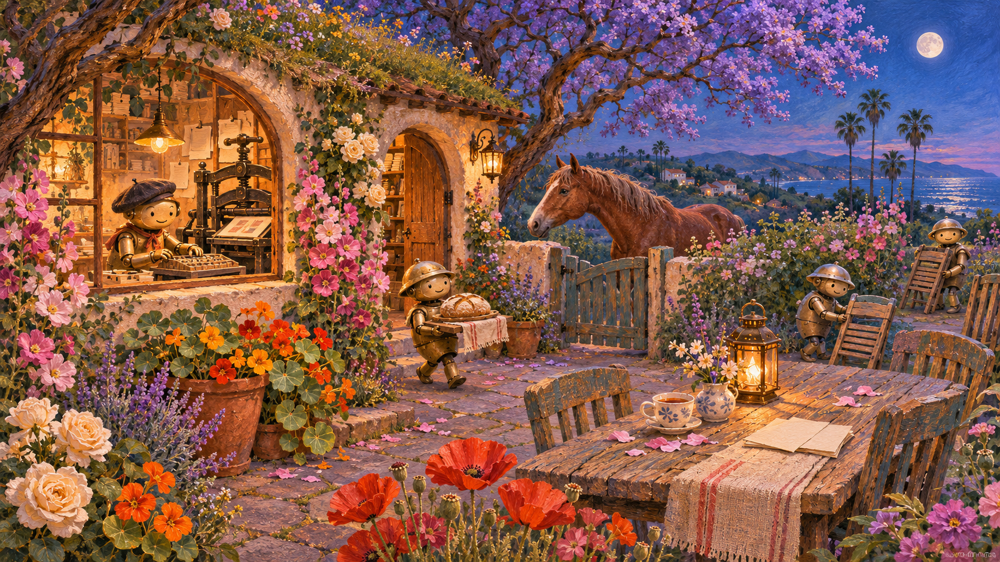

PLEASANT GARDEN · AN ORIGINAL FICTION ARCHIVEMidnight Printers
A little printshop, a patient horse, and a table that keeps finding room for another guest.

Read the stories
Listen, if you like
The Last Light · Garden Music No. 1
A Name for the Apprentice
Read and join the existing story thread on Loom
Original AI-assisted fiction. Illustration and music are AI-generated. Media plays only when you choose. Reader suggestions have not been selected as the apprentice’s name.Contents, provenance and credits · Creative persona cards